Grid View, Map View + Tracking: open status pills in the header (prototype only)
Open status chips (26px, as Grid View version B) next to the title; search and filter 26px; Tracking: map headers removed, Live Track / Track History switch in the header, “Vehicles” heading removed, filter in the header, Demo data tag in the vehicle list.
Latest · Grid View: Search · Filter · Sort · Grid/List · Map View: filter next to the vehicle list search
Map View · 1440
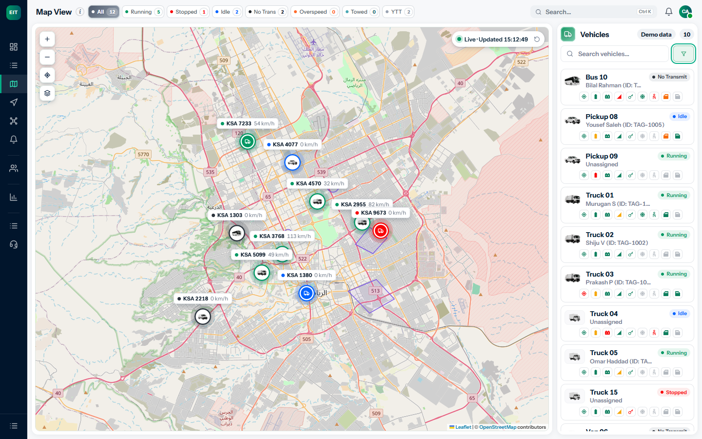
Map View · filter panel under its button · 1440
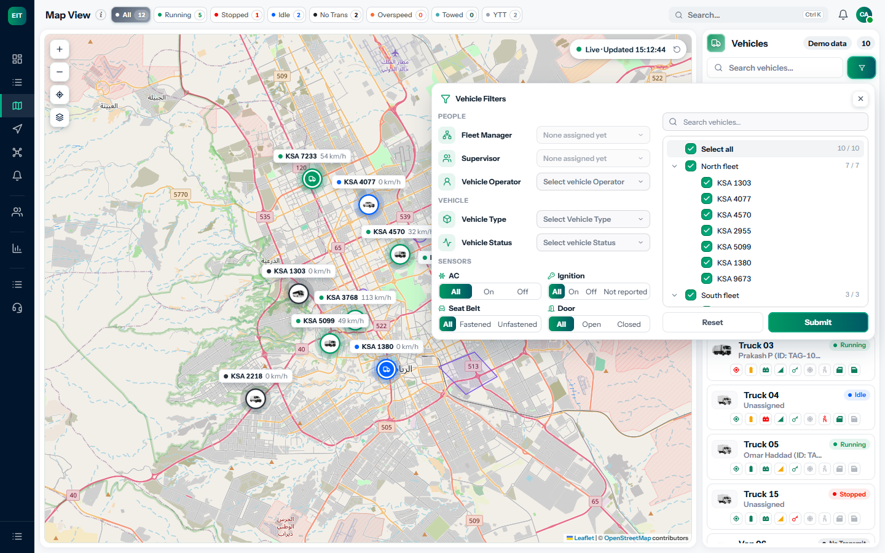
Grid View header · 1440
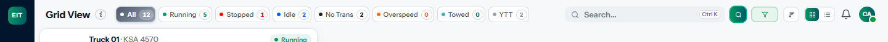
Grid View header · 1280
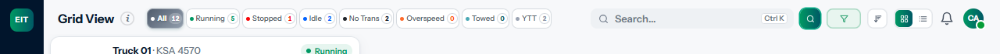
Map on the left, vehicle list on the right (Map View, Tracking: Live Track and Track History) · Grid View vehicle search (Filter · Search · Sort · Grid/List) · cards no longer cropped
Map View · 1440
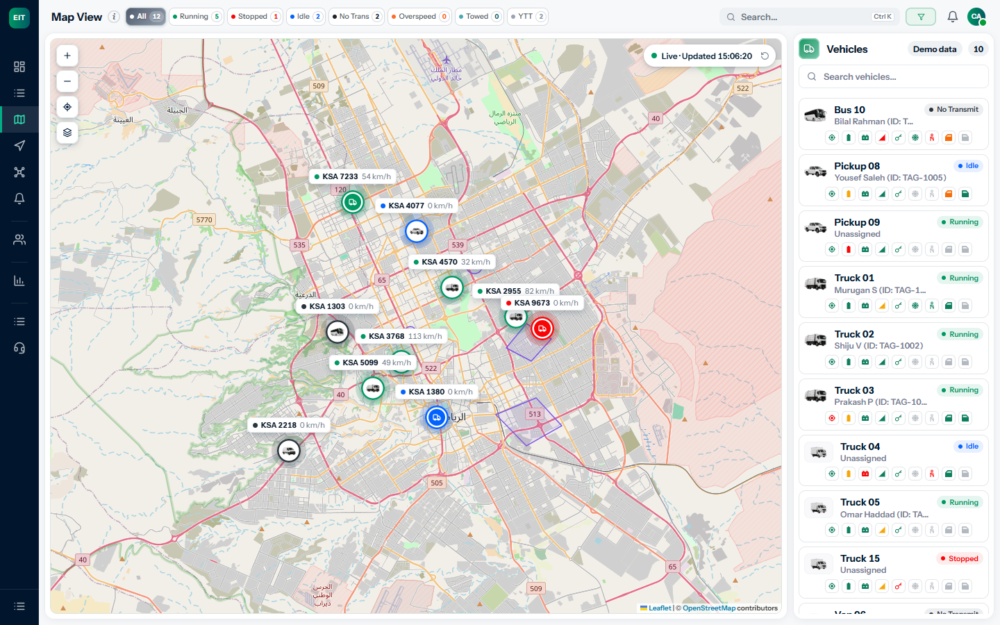
Tracking · Live Track · 1440
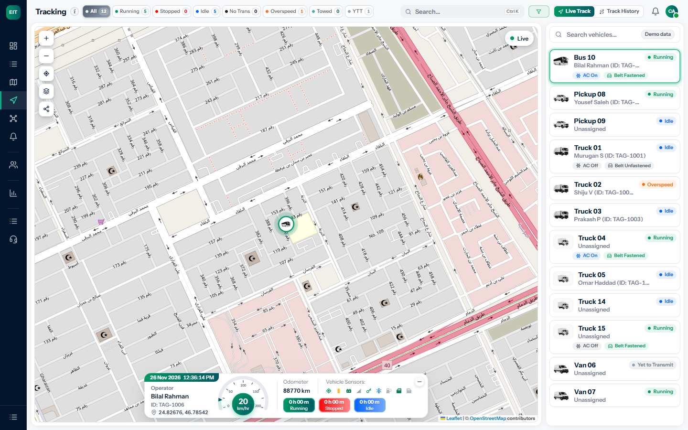
Tracking · Track History · 1440
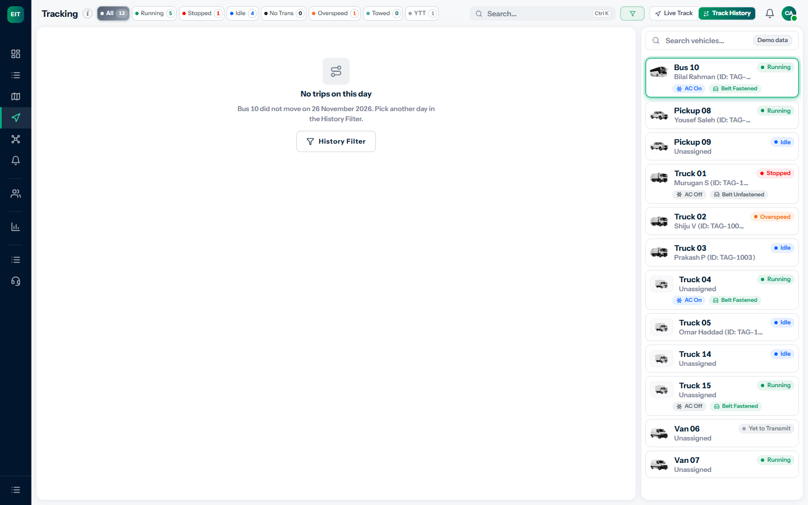
Map View · filter panel · 1440
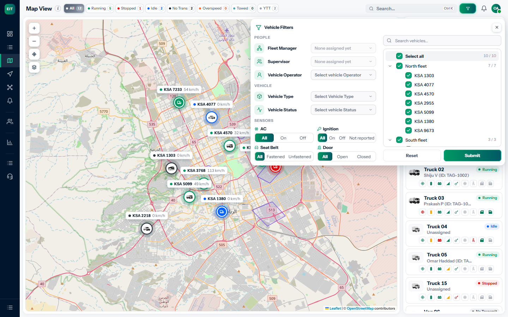
Grid View · vehicle search typing “4570”
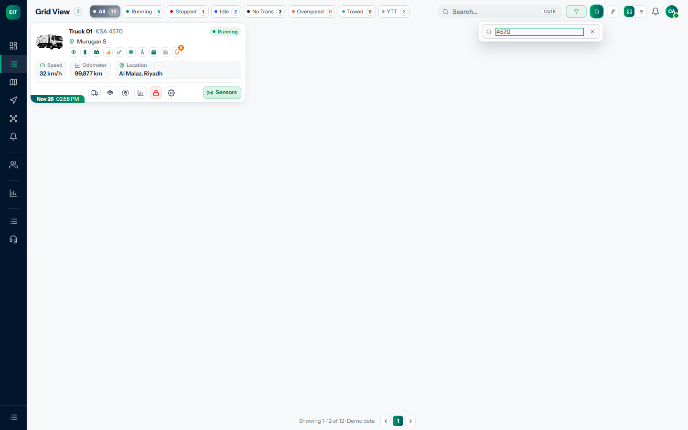
Grid View · search kept after closing (icon green)
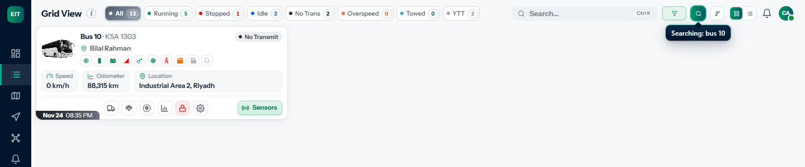
Grid View header · 1440
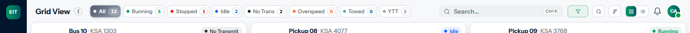
Grid View header · 1280
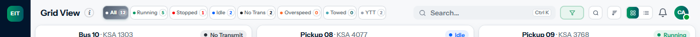
10px from the header controls to the content (all three); Tracking search field 8px from the top of the list
Grid View · 1440
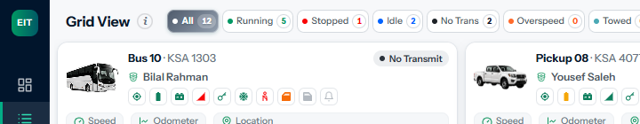
Map View · 1440
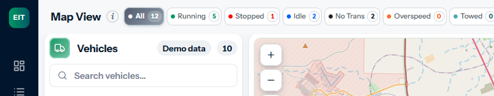
Tracking · 1440
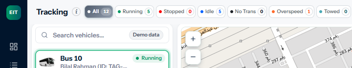
Tracking search field · 1440 (zoomed)
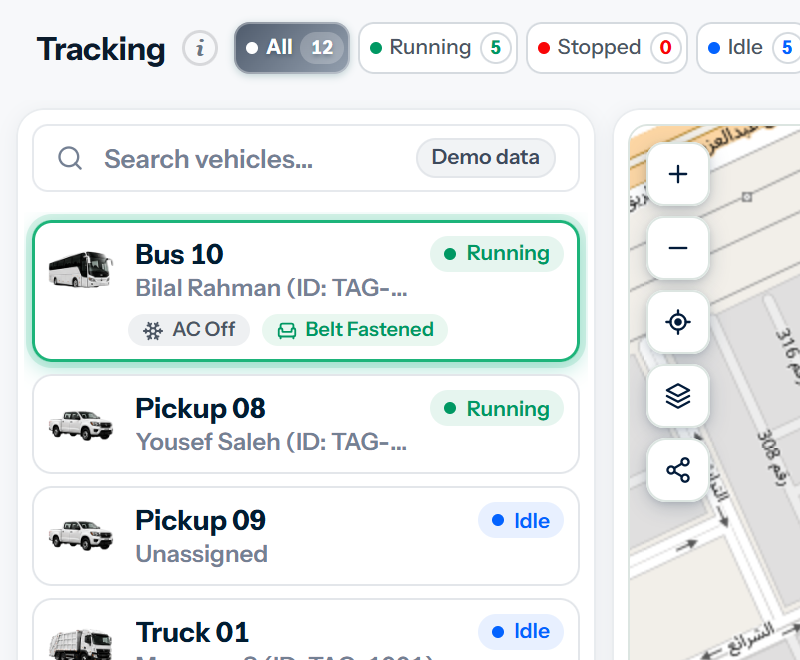
Tracking search field · 1280 (zoomed)
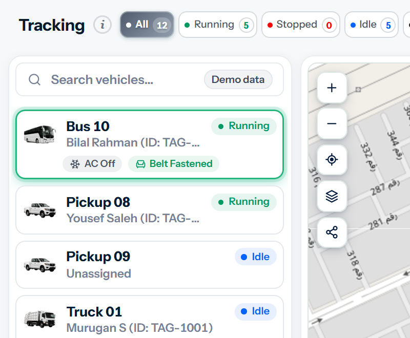
Same status pill size and font on all three; 10px between header and content
At each window size all three screens use the same pill size (the largest that fits on the tightest screen). 1920: 11.5px · 1440: 10.5px · 1366: 10.5px · 1280: 10px; pills always 26px tall and on one line. Gap under the header: 10px on all three.
Grid View · 1920
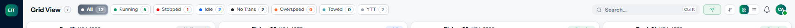
Map View · 1920
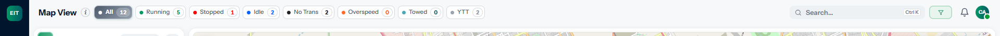
Tracking · 1920
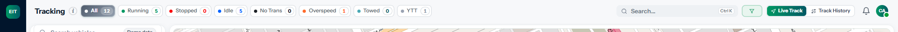
Grid View · 1440
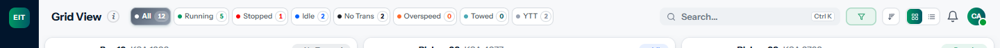
Map View · 1440
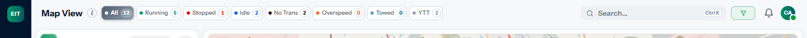
Tracking · 1440
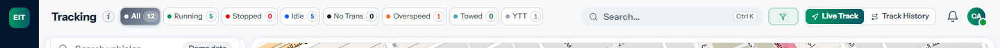
Grid View · 1280
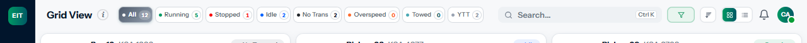
Map View · 1280
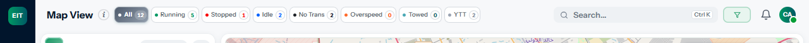
Tracking · 1280
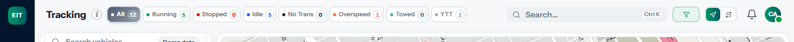
Grid View · 1440 full page
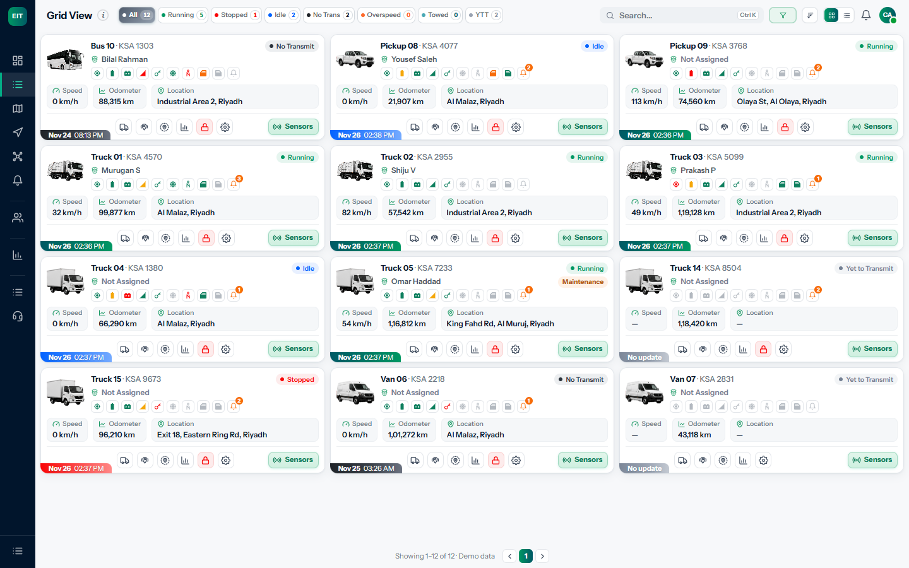
Map View · 1440 full page
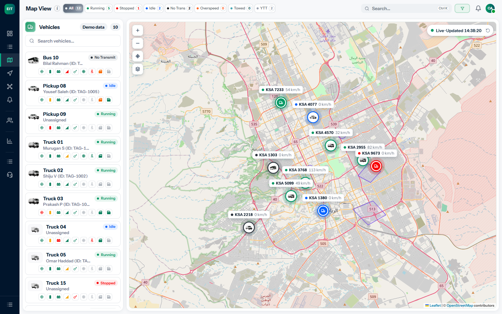
Tracking · 1440 full page
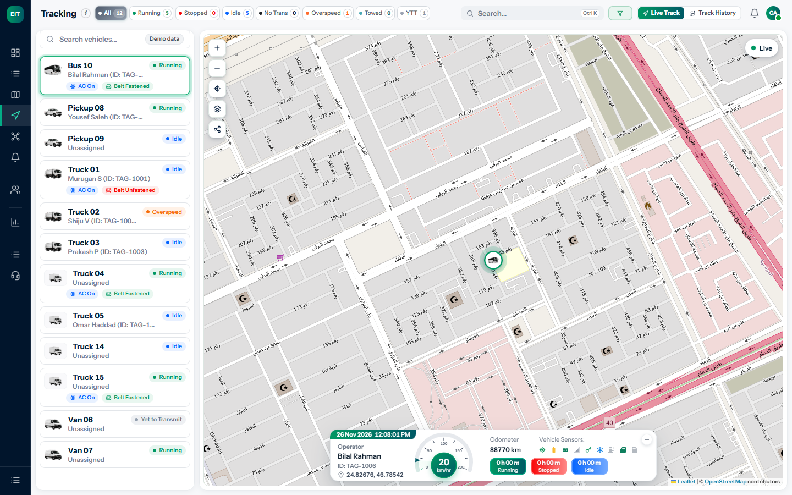
Grid View: open status pills (one line) instead of the status dropdown
Grid View · 1920
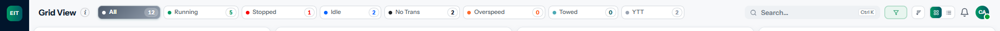
Grid View · 1440
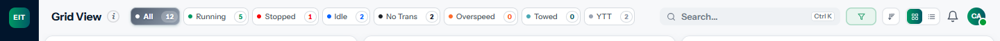
Grid View · 1366
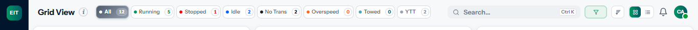
Grid View · 1280
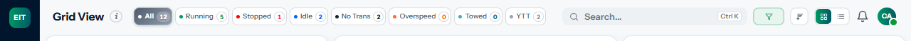
Grid View · 1440 full page
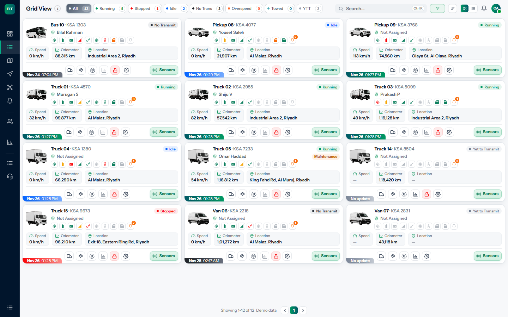
Grid View · 1280, “Running” pill
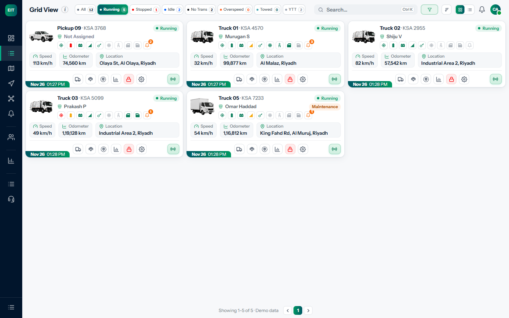
Tracking header: status pills always on ONE line
Wide windows: Live Track / Track History with text. Narrower (about 1366px and below): the switch shows its two icons (tooltips name them), so the pills keep one line with readable text. Very narrow (1024px): still one line, the pill row scrolls sideways. Map View unchanged.